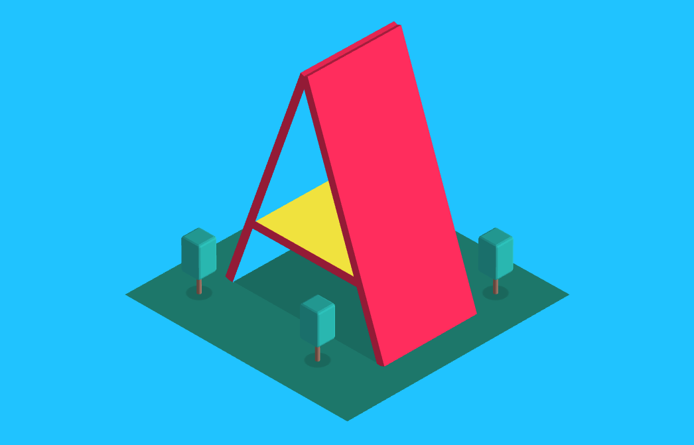
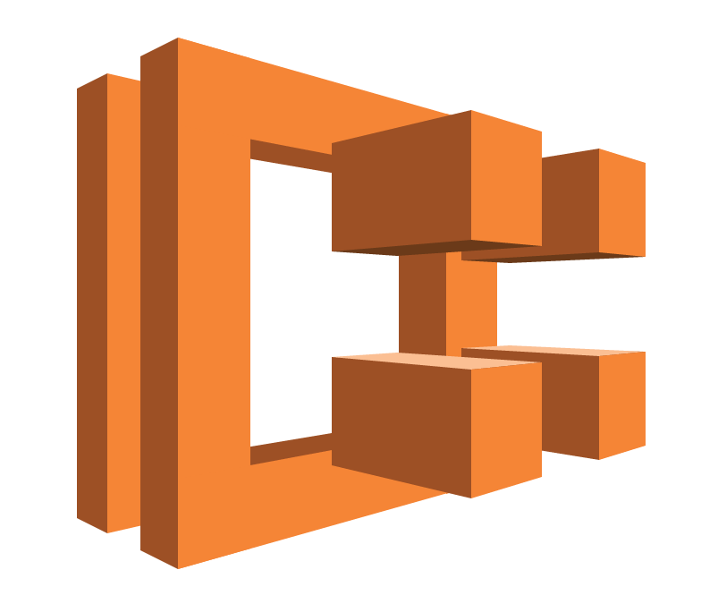
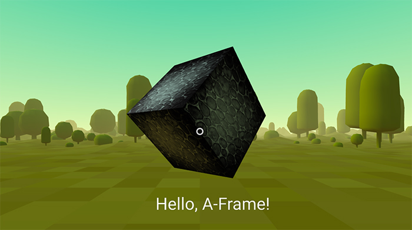
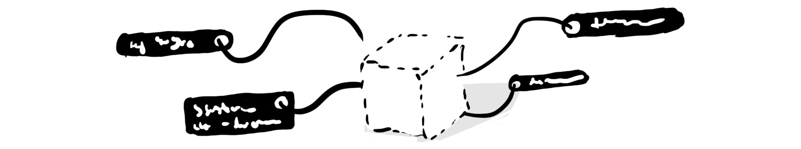
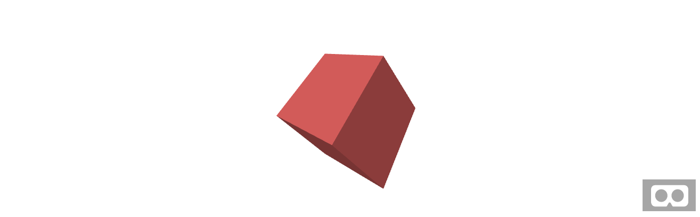
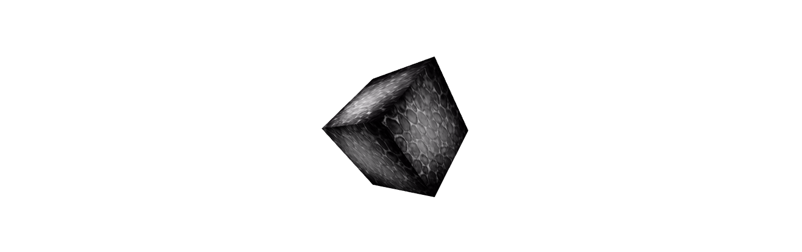
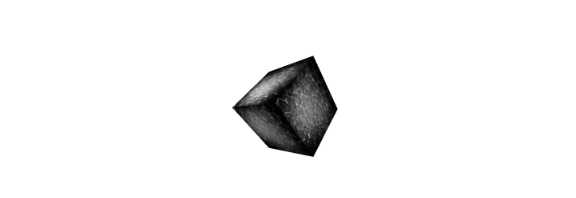
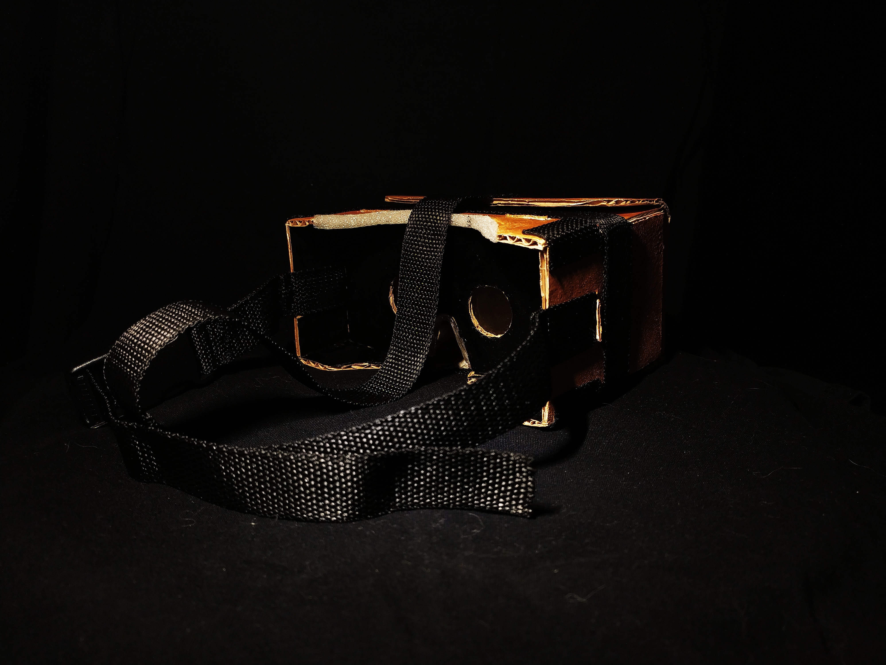

A-Frame — это веб-фреймворк позволяющий создавать различные приложения, игры, сцены в виртуальной реальности (ВР). Все вышеописанное будет доступно прямо из браузера вашего шлема ВР. Этот инструмент будет полезен как тем кто хочет заниматься разработкой ВР игр в браузере, так и например, может пригодится в качестве платформы для создания веб ВР приложений, сайтов, посадочных страниц. Сферы использования веб ВР ограничены лишь вашим воображением. Навскидку могу привести пару сфер деятельности человека где ВР может быть полезен: образование, медицина, спорт, продажи, отдых.
A-Frame не написан с 0 на чистом WebGL, в его основе лежит библиотека Three.js. Поэтому рекомендую для начала разобраться с базовыми концепциями Three.js прежде чем начинать работать с A-Frame, хотя это и не обязательно, так как A-Frame устроен таким образом, чтобы вы меньше всего думали о рендеринге геометрии и больше концентрировались на логике вашего приложения. На то он, вообщем-то, и фреймворк.
Для этого A-Frame постулирует три основных положения, о которых мы и поговорим далее.
Многие базовые элементы A-Frame, такие как scene, camera, box, sphere и др., добавляются на сцену через одноименные теги с префиксом a-. Каждый подобный элемент зарегистрирован как пользовательский. На сегодняшний день A-Frame (0.8.0) использует спецификацию v0.
Данный небольшой фрагмент кода отрисует WebGL сцену к которой будут добавлены два объекта: куб и сфера с заданными параметрами. Помимо упомянутых выше двух элементов существует
еще ряд других примитивов, которые могут быть добавлены на сцену таким же образом: <a-circle>, <a-cone>, <a-cylinder>, <a-dodecahedron>,
<a-icosahedron>, <a-octahedron>, <a-plane>, <a-ring>, <a-tetrahedron>, <a-torus-knot>, <a-torus>, <a-triangle>.
Также в A-Frame существует ряд других элементов, которые выполняют определенные функции:
- <a-camera> — создает камеру. На данный момент поддерживается только перспективная камера (PerspectiveCamera)
- <a-obj-model>, <a-collada-model>, <a-gltf-model> — все они грузят и отображают модели соответствующего формата.
- <a-cursor> — элемент позволяющий выполнять различные действия: клик, наведение и др. Курсор привязан к центру камеры, таким образом он всегда будет по центру того что видит пользователь.
- <a-image> — отображает выбранное изображение на плоскости (<a-plane>).
- <a-link> — то же самое что тег, только для 3D сцены.
- <a-sky> — огромный цилиндр вокруг сцены, который позволяет отображать 360 фотографии. Или его просто можно залить каким-нибудь цветом.
- <a-sound> — создает источник звука в заданной позиции.
- <a-text> — рисует плоский текст.
- <a-video> — проигрывает видео на плоскости.
Также хотелось бы отметить, что мы работаем с элементами DOM, а поэтому можем использовать стандартное DOM API, включая querySelector, getElementById, appendChild и тд.

ECS (Entity Component System) — паттерн проектирования приложений и игр. Широкую распространенность получил как раз-таки во втором сегменте. Как видно из названия, три основные понятия паттерна это Entity (Сущность), Component (Компонент), System (Система). В классическом виде они взаимосвязаны друг с другом следующим образом: у нас есть некоторый объект-контейнер (Сущность), к которому можно добавлять компоненты. Обычно компонент отвечает за отдельную часть логики. Например, у нас есть объект Player (Игрок), у него есть компонент Health (Здоровье). Этот компонент будет содержать всю логику связанную с восполнением или потерей здоровья игрока (объекта). А системы, в свою очередь, нужны для того, чтобы управлять набором сущностей объединенных некоторыми компонентами. Обычно некий компонент может зарегистрировать сущность внутри одноименной системы.В A-Frame этот паттерн реализован очень просто и элегантно — с помощью атрибутов. В качестве сущностей используются любые элементы A-Frame — <a-scene>, <a-box>, <a-sphere>, и др. Но особняком конечно же стоит элемент <a-entity>. Его имя говорит само за себя. Все остальные элементы являются по сути обертками для компонентов и сделаны для удобства, так как любой элемент можно создать и при помощи <a-entity>. Например <a-box>:
<a-entity geometry="primitive: box; width: 1; height: 1; depth: 1"></a-entity>
geometry — в данном случае является компонентом, который был добавлен к сущности <a-entity>. Сам по себе <a-entity> не имеет какой-либо логики (в глобальном смысле), а компонент geometry — по сути превращает его в куб или что-либо другое. Другим не менее важным чем geometry компонентом является material. Он добавляет к геометрии материал. Материал отвечает за то, будет ли наш куб блестеть как металл, будет ли иметь какие-либо текстуры и т.д. В чистом Three.js нам бы пришлось создавать отдельно геометрию, отдельно материал, а потом это все нужно было бы скомбинировать в мэше. В общем такой подход существенно экономит время.
Любой компонент в A-Frame должен быть зарегистрирован глобально через специальную конструкцию:
AFRAME.registerComponent('hello-world', { init: function () { console.log('Hello, World!'); } });
Затем этот компонент можно будет добавить на сцену, или любой другой элемент.
<a-entity hello-world></a-entity>
Так как мы добавили init коллбэк для нашего компонента, то как только элемент будет добавлен в DOM, данный коллбэк отработает и мы увидим наше сообщение в консоли. В компонентах A-Frame есть и другие коллбэки жизненного цикла. Давайте остановимся на них подробнее:
- update — вызывается как при инициализации как init, так и при обновлении любого свойства данного компонента.
- remove — вызывается после удаления компонента или сущности его содержащей. То есть, если вы удалите <a-entity> из DOM, все его компоненты вызовут remove коллбэк.
- tick — вызывается каждый раз перед рендерингом сцены. Внутри цикл рендеринга использует requestAnimaitonFrame
- tock — вызывается каждый раз после рендеринга сцены.
- play — вызывается каждый при возобновлении рендеринга сцены. По сути после scene.play();
- pause — вызывается каждый раз при остановке рендеринга сцены. По сути после scene.pause();
- updateSchema — вызывается каждый раз после обновления схемы.
Еще одним важным концептом компонента в A-Frame является схема. Схема описывает свойства компонента. Она определяется следующим образом:
AFRAME.registerComponent('my-component', {
schema: {
arrayProperty: {type: 'array', default: []},
integerProperty: {type: 'int', default: 5}
}
}
В данном случае наш компонент my-component будет содержать два свойства arrayProperty и integerProperty. Чтобы передать их в компонент нужно задать значение соответствующего атрибута.
<a-entity my-component="arrayProperty: 1,2,3; integerProperty: 7"></a-entity>
Получить эти свойства внутри компонента можно через свойство data.
AFRAME.registerComponent('my-component', {
schema: {
arrayProperty: {type: 'array', default: []},
integerProperty: {type: 'int', default: 5}
},
init: function () {
console.log(this.data);
}
}
Чтобы получить свойства компонента из сущности к которой он добавлен можно воспользоваться немного видоизмененной функцией getAttribute. При обращении к сущности A-Frame она вернет не просто строковое значение атрибута, а объект data, упомянутый выше.
console.log(this.el.getAttribute('my-component'));
// {arrayProperty: [1,2,3], integerProperty: 7}
Примерно таким же образом можно изменить свойства компонента:
this.el.setAttribute('my-component',{arrayProperty: [], integerProperty: 5})
Теперь поговорим о системах. Системы в A-Frame регистрируется похожим образом как и компоненты:
AFRAME.registerSystem('my-system', {
schema: {},
init: function () {
console.log('Hello, System!');
},
});
Так же как и компонент система имеет схему и коллбэки. Только у системы их всего 5: init, play, pause, tick, tock. Систему не нужно добавлять как компонент к сущности. Она автоматически будет добавлена к сцене.
this.el.sceneEl.systems['my-system'];
Если компонент будет иметь такое же имя как и система, то система будет доступна по ссылке this.system.
AFRAME.registerSystem('enemy', {
schema: {},
init: function () {},
});
AFRAME.registerComponent('enemy', {
schema: {},
init: function () {
const enemySystem = this.system;
},
});
Обычно системы нужны для того чтобы собирать и управлять сущностями с соответствующими компонентами. Тут, по идее, должна находится логика, которая относится к коллекции сущностей. Например, управление появлением врагов в игре.
И действительно, зачем изобретать колесо, если на данный момент существует прекрасная встроенная реализация издатель-подписчик для элементов DOM. События DOM позволяют слушать как события браузера, такие как нажатие на клавишу клавиатуры, клик мышкой и другие, так и пользовательские события. A-Frame предлагает нам удобный и простой способ коммуникации между сущностями, компонентами и системами, через пользовательские события. Для этого каждый элемент А-Frame пропатчен функцией emit, она принимает три параметра: первый — название события, второй — данные которое нужно передать, третий — должно ли событие всплывать.
this.el.emit('start-game', {level: 1}, false);
Подписаться на данное событие можно привычным всем нам способом, используя addEventListener:
const someEntity = document.getElementById(‘someEntity’); someEntity.addEventListener(‘start-game’, () => {...});
Всплывание событий (bubbling) тут является очень важным моментом, ведь иногда две сущности которые должны коммуницировать с друг другом находятся на одном уровне, в таком случае можно добавить слушатель события на элемент сцены. Он как вы могли видеть ранее, доступен внутри каждого элемента через ссылку sceneEl.
this.el.sceneEl.addEventListener(‘start-game’, () => {...});
Для того, чтобы сверстать даже самый простейший сайт, необходимо изучить базовые понятия html-кода. Рекомендуемый курс: HTML Academy.

Для того, чтобы создать базовую сцену в A-Frame и понять как работает фреймворк, нам потребуется начальное понимание HTML. В ходе этого урока мы выучим:
- как добавлять 3D объекты с помощью примитивов;
- как трансформировать объекты в 3-х мерном пространстве с помощью, перемещений, поворотов и масштабирования;
- как добавить окружение;
- как добавить текстуры;
- как добавить базовую интерактивность с помощью событий и анимации;
- как добавить текст.
<html>
<head>
<script src="https://aframe.io/releases/0.8.0/aframe.min.js"></script>
</head>
<body>
<a-scene>
</a-scene>
</body>
</html>
Мы подключаем A-Frame через <script> тег, добавленный в раздел <head>. Код библиотеки находится на CDN. Подключение A-Frame должно быть добавлено до <a-scene> так как A-Frame регистрирует пользовательские HTML элементы, которые должны быть определены до того как <a-scene> будет добавлен в DOM, иначе сцена останется пустой.
Далее, мы добавляем тег <a-scene> в тело документа <body>. <a-scene> это элемент с помощью которого происходит управление сценой. Добавляя элементы в <a-scene> мы добавляем их на фактическую 3D сцену. <a-scene> отвечает за все что необходимо: устанавливает WebGL, <canvas>, камеру, свет, renderer (отрисовщик), а так же и все что связано с поддержкой WebVR на таких платформах как HTC Vive, Oculus Rift, Samsung GearVR, Oculus Go и Google Cardboards.
Используя <a-scene>, мы добавляем 3D объекты c помощью стандартных примитивов A-Frame, например <a-box>. Мы можем использовать <a-box> просто как обычный HTML элемент, добавляя к нему атрибуты для кастомизации. Вот еще несколько стандартных примитивов доступных в A-Frame: <a-cylinder>, <a-plane>, <a-sphere>.
В следующем примере кода мы добавим цветной <a-box>. Больше атрибутов для <a-box> можно найти тут.

Необходимо заметить, что примитивы в A-Frame являются всего лишь обертками для некоторых компонентов. Это удобно, но нужно понимать что под <a-box> кроется <a-entity> с geometry и material компонентами:
<a-entity id="box" geometry="primitive: box" material="color: red"></a-entity>
В любом случае, так как камера и куб, добавленные на сцену, находятся в одной и той же точке 0,0,0, мы не сможем увидеть куб до тех пор, пока не поменяем его позицию. Сделать это достаточно просто: нужно всего лишь поменять атрибут position, чтобы переместить наш куб в пространстве.
Давайте сначала поговорим о 3D пространстве. A-Frame использует правую (right-handed) систему координат. Направление камеры по умолчанию: положительная X-ось уходит вправо, положительная Y-ось уходит вверх и положительная Z-ось уходит назад от экрана в направлении нас:

A-Frame измеряет дистанцию в метрах (а не в пикселях как в React360) так как WebVR API возвращает данные позиции и позы в метрах. Когда вы проектируете ВР сцену очень важно рассматривать именно реальные размеры объектов. Куб с высотой в 10 метров может выглядеть нормально на экранах наших компьютеров, но он будет слишком массивным при погружении в виртуальную реальность.
Единицы вращения в A-Frame — это градусы (не радианы как в Three.js), поэтому они автоматически будут пересчитаны в радианы при попадании в Three.js. Для определения положительного направления вращения используется правило правой руки. Направьте палец правой руки вдоль положительного направления любой оси, тогда направление в котором наши пальцы согнуты и будут положительным направлением вращения.
Чтобы переместить, вращать или масштабировать наш куб, мы может изменить соответственно position, rotation и scale компоненты (представленные атрибутами тега <a-box>). Давайте попробуем для начала применить вращение и масштабирование:
<a-scene>
<a-box color="red" rotation="0 45 45" scale="2 2 2"></a-box>
</a-scene>
Это должно повернуть наш куб на заданные углы и растянуть его по всем осям в два раза.
Граф сцены в A-Frame реализован с помощью HTML. Каждый элемент такой структуры может иметь несколько потомков и лишь одного предка. Любой потомок в такой структуре наследует свойства трансформации (position, rotation, scale) своего предка.
Например, мы можем добавить сферу как потомка куба:
<a-scene>
<a-box position="0 2 0" rotation="0 45 45" scale="2 4 2">
<a-sphere position="1 0 3"></a-sphere>
</a-box>
</a-scene>
Позиция сферы на сцене будет 1 2 3, а не 1 0 3, так как по умолчанию сфера находится в координатах своего предка, то есть куба — 0 2 0. Эта точка в данном случае будет точкой отсчета для сферы, которая имеет свои координаты 1 0 3. То же самое относится к вращению и масштабу. Если любой из атрибутов куба будет изменен, это изменение автоматически затронет всех потомков (в нашем случае сферу).
Если бы мы добавили цилиндр как потомка сферы, трансформации цилиндра были бы посчитаны исходя из трансформаций его предков: куба и сферы.
Теперь давайте сделаем наш куб видимым для нашей камеры. Мы можем передвинуть наш куб на 5 метров по оси Z в отрицательном направлении (то есть от нас). Давайте также поднимем его на два метра вверх по оси Y. Все это можно сделать изменив атрибут position:
<a-scene>
<a-box color="red" position="0 2 -5" rotation="0 45 45" scale="2 2 2"></a-box>
</a-scene>
Теперь мы видим его! Юху!

Для плоских дисплеев (ноутбуки, компьютеры) управление камерой по умолчанию осуществляется через перетаскивание мышкой и WASD или стрелки на клавиатуре. В телефонах за это отвечает акселерометр. Несмотря на то что A-Frame является фреймворком для WebVR он поддерживает данные схемы управления для того, чтобы сцену можно было просмотреть и без шлема виртуальной реальности.

Если вы используете шлем виртуальной реальности, то управление будет осуществляться с помощью контроллеров и шлема. Чтобы попасть в виртуальную реальность из браузера вашего шлема, вам нужно нажать на иконку с изображением шлема виртуальной реальности, которая расположена в правом нижнем углу. Если вы используете шлем с 6-ю степенями свободы, и у вас есть реальное пространство, вы можете физически походить по созданной вами сцене.
A-Frame позволяет разработчикам создавать и делиться компонентами, которые затем легко использовать в своих проектах. Компонент окружения созданный Диего Гоберна генерирует различные окружения и все это достигается всего лишь одной строчкой кода! Компонент окружения это великолепный и простой способ создать визуальную платформу для наших ВР приложений. Он позволяет создавать десятки окружений, настраиваемых многочисленным количеством параметров.
Для начала нужно подключить скрипт в раздел после A-Frame:
<head>
<script src="https://aframe.io/releases/0.8.0/aframe.min.js"></script>
<script src="https://unpkg.com/aframe-environment-component/dist/aframe-environment-component.min.js"></script>
</head>
После этого, уже в сцене, нужно добавить тег <a-entity> c атрибутом environment и заданными настройками, пусть это будет forest (лес) с 200-ми деревьями:
<a-scene>
<a-box color="red" position="0 2 -5" rotation="0 45 45" scale="2 2 2"></a-box>
<!-- Окружение, прямо из коробки! -->
<a-entity environment="preset: forest; dressingAmount: 200"></a-entity>
</a-scene>
Пометка: имейте ввиду, что при использовании слабого “железа” такая сцена может и притормаживать. Например, это может произойти на мобильных устройствах типа Oculus Go. Так что если вы поддерживаете и мобильные устройства, следите за количеством генерируемых объектов.
Мы можем применить текстуру к нашему кубу, используя изображение, видео или canvas с помощью атрибута src, также как мы делаем это с обычным тегом . Также нам необходимо удалить color=«red» так как цвет все равно не будет отображаться при использовании текстуры.
<a-scene>
<a-box src="https://i.imgur.com/mYmmbrp.jpg" position="0 2 -5" rotation="0 45 45"
scale="2 2 2"></a-box>
<a-sky color="#222"></a-sky>
</a-scene>
Теперь мы должны увидеть наш куб уже с текстурой, подгруженной он-лайн.

Чтобы улучшить производительность вашего приложения на A-Frame рекомендуем вам использовать систему управления загрузкой файлов. Эта система позволяет браузеру кэшировать разные файлы (изображения, видео, 3d модели). A-Frame отвечает за то, чтобы все эти файлы были загружены до рендеринга.
Если мы напишем тэг внутри <a-assets>, A-Frame не будет отображать его как в привычном HTML, он обработает источник и отправит его в Three.js. Важно отметить, что загрузив изображение один раз мы можем использовать его где угодно, например в качестве текстуры. Также A-Frame позаботится о кросс-доменности и других возможных проблемах, связанных с передачей файлов по сети.
Чтобы использовать систему управления загрузкой файлов для добавления текстуры нужно:
- Добавить тег <a-assets> внутрь тега <a-scene> (на первый уровень)
- Добавить тег <img>, атрибут src должен содержать ссылку файл изображения (также как и в привычном нам HTML)
- Нужно задать атрибут id для тега img. В идеале он должен описывать саму текстуру (например, id=”boxTexture”)
- Добавить атрибут src для объекта который должен ее содержать. Например для <a-box src="#boxTexture" >
<a-scene>
<a-assets>
<img id="boxTexture" src="https://i.imgur.com/mYmmbrp.jpg">
</a-assets>
<a-box src="#boxTexture" position="0 2 -5" rotation="0 45 45" scale="2 2 2"></a-box>
<a-sky color="#222"></a-sky>
</a-scene>
Мы уже говорил о компоненте окружения выше. Оно генерируется автоматически. А что если нам нужно сделать свое собственное окружение: добавить облака, землю, другие объекты? Предлагаю поговорить об этом далее.
Для того чтобы добавить фоновое изображение для сцены в A-Frame есть специальный элемент <a-sky>. <a-sky> позволяет добавлять как чистый цвет, так и 360 изображения или видео. Например, чтобы добавить темно-серый фон нужно написать следующий код:
<a-scene>
<a-box color="red" position="0 2 -5" rotation="0 45 45" scale="2 2 2"></a-box>
<a-sky color="#222"></a-sky>
</a-scene>
Или мы можем использовать 360 фотографию:
<a-scene>
<a-assets>
<img id="boxTexture" src="https://i.imgur.com/mYmmbrp.jpg">
<img id="skyTexture"
src="https://cdn.aframe.io/360-image-gallery-boilerplate/img/sechelt.jpg">
</a-assets>
<a-box src="#boxTexture" position="0 2 -5" rotation="0 45 45" scale="2 2 2"></a-box>
<a-sky src="#skyTexture"></a-sky>
</a-scene>
Чтобы добавить землю мы будем использовать элемент <a-plane>. По умолчанию плоскости в A-Frame ориентированы параллельно оси XY. Чтобы сделать плоскость паралелльной земле, нам нужно повернуть ее так чтобы она была параллельна оси XZ. Это можно сделать повернув плоскость на -90° по оси X.
<a-plane src="#groundTexture" rotation="-90 0 0" width="30" height="30" repeat="10 10"></a-plane>
Чтобы изменить освещение нашей сцены мы можем добавить или перенастроить элемент <a-light>. По умолчанию, у нас не было никаких источников света, но A-Frame сам добавляет рассеянный свет (ambient light) и направленный свет (directional light). Если бы A-Frame не добавил эти источники света, то сцена была бы полностью черной. Если мы добавим свои собственные источники света, то те источники, которые добавляет A-Frame по умолчанию, будут удалены.
Мы добавим один источник рассеянного света, который будет иметь синевато-зеленый оттенок (чтобы гармонировать с небом). Рассеянный свет должен попадать на все элементы нашей сцены (конечно если они будут иметь материалы, но по умолчанию это так).
Мы также добавим источник точечного света (point light). Источник точечного света похож на лампочку. Эффект освещения такого источника будет полностью зависеть от дистанции до объекта.
<a-scene>
<a-assets>
<img id="boxTexture" src="https://i.imgur.com/mYmmbrp.jpg">
<img id="skyTexture"
src="https://cdn.aframe.io/360-image-gallery-boilerplate/img/sechelt.jpg">
<img id="groundTexture" src="https://cdn.aframe.io/a-painter/images/floor.jpg">
</a-assets>
<a-box src="#boxTexture" position="0 2 -5" rotation="0 45 45" scale="2 2 2"></a-box>
<a-sky src="#skyTexture"></a-sky>
<a-light type="ambient" color="#445451"></a-light>
<a-light type="point" intensity="2" position="2 4 4"></a-light>
</a-scene>
У нас есть возможность добавить анимацию используя встроенную систему анимации A-Frame. Анимация изменяет некоторое значение (свойство компонента) с течением времени. Нам нужно, всего лишь, добавить элемент <a-animation> как потомок некоторого объекта, например <a-box>. Давайте попробуем анимировать куб таким образом, чтобы он двигался вверх-вниз.
<a-scene>
<a-assets>
<img id="boxTexture" src="https://i.imgur.com/mYmmbrp.jpg">
</a-assets>
<a-box src="#boxTexture" position="0 2 -5" rotation="0 45 45" scale="2 2 2">
<a-animation attribute="position" to="0 2.2 -5" direction="alternate" dur="2000"
repeat="indefinite"></a-animation>
</a-box>
</a-scene>
Мы говорим <a-animation>:
- Что нужно анимировать атрибут position.
- Анимировать до 0 2.2 -5 что на 20 сантиметров выше первоночальной позиции.
- Изменять направление анимации на каждом цикле.
- Цикл анимации будет занимать 2 секунды (2000 миллисекунд).
- Повторять анимацию бесконечно.

<a-animation> использует цикл рендеринга A-Frame, поэтому каждое изменение свойств объекта происходит один раз за кадр. Если вам нужно больше контроля и вы хотите изменять значения вручную, вы можете написать компонент A-Frame с колбэком tick и библиотекой такой как Tween.js (которая кстати доступна по ссылке AFRAME.TWEEN). Для лучшей производительности, покадровые операции должны быть выполнены на уровне A-Frame, не нужно создать вашу собственную функцию requestAnimationFrame когда A-Frame уже имеет ее.
Давайте добавим возможность взаимодействовать с нашим кубом: когда мы смотрим на него, мы увеличим его размеры, а при клике он прокрутиться вокруг своей оси.
Предполагая что большинство разработчиков не имеют ВР шлемов с контроллерами мы сфокусируемся на использовании базового компонента для ввода на компьютерах и мобильных устройствах — курсоре. Курсор предоставляет возможность “кликнуть” на объект через наведение для мобильных устройств и кликом мышки для компьютеров. Но нужно понимать что курсор это всего лишь один из способов взаимодействия, все будет немного иначе если у нас будут настоящие ВР контроллеры.
Чтобы привязать курсор к камере нам нужно добавить его в качестве потомка к элементу камеры (<a-camera>).
Так как мы еще не определили камеру, A-Frame сделал это автоматически. но так как нам нужно добавить курсор в камеру, мы определим <a-camera> вручную и добавим туда <a-cursor>:
<a-scene>
<a-assets>
<img id="boxTexture" src="https://i.imgur.com/mYmmbrp.jpg">
</a-assets>
<a-box src="#boxTexture" position="0 2 -5" rotation="0 45 45" scale="2 2 2">
<a-animation attribute="position" to="0 2.2 -5" direction="alternate" dur="2000"
repeat="indefinite"></a-animation>
</a-box>
<a-camera>
<a-cursor></a-cursor>
</a-camera>
</a-scene>
Если мы посмотрим документацию курсора, мы видим что он обрабатывает события наведения такие как mouseenter, mouseleave а еще и событие click.
Один из способов обработать события курсора это добавить слушатель событий через JavaScript просто как для обычно DOM элемента. Если вы не уверены в своих знаниях по JavaScript, вы можете пропустить этот раздел до следующего.
В JavaScript мы получаем элемент через querySelector, а используя addEventListener, и setAttribute чтобы увеличить размеры куба при наведении курсора. Заметка: A-Frame изменяет setAttribute так чтобы он мог работать сразу с несколькими компонентами. Мы можем добавить {x, y, z} как второй аргумент.
<script>
var boxEl = document.querySelector('a-box');
boxEl.addEventListener('mouseenter', function () {
boxEl.setAttribute('scale', {x: 2, y: 2, z: 2});
});
</script>
Но более быстрым способом будет инкапсулировать логику внутри компонента A-Frame. Этот метод не требует ожидания загрузки сцены, нам не нужно использовать селекторы потому что компонент дает нам контекст:
<script>
AFRAME.registerComponent('scale-on-mouseenter', {
schema: {
to: {default: '2.5 2.5 2.5'}
},
init: function () {
var data = this.data;
this.el.addEventListener('mouseenter', function () {
this.setAttribute('scale', data.to);
});
}
});
</script>
Мы можем добавить этот компонент через HTML атрибут:
<script>
AFRAME.registerComponent('scale-on-mouseenter', {
// ...
});
</script>
<a-scene>
<!-- ... -->
<a-box src="#boxTexture" position="0 2 -5" rotation="0 45 45" scale="2 2 2"
scale-on-mouseenter="to: 2.2 2.2 2.2">
<a-animation attribute="position" to="0 2.2 -5" direction="alternate" dur="2000"
repeat="indefinite"></a-animation>
</a-box>
<!-- ... -->
</a-scene>
<a-animation> имеет возможность начинать и заканчивать свою анимацию когда объект продуцирует событие. Это можно сделать через атрибут begin указав имя события.
Мы можем добавить две анимации для компонента курсор — mouseenter и onemouseleave события чтобы изменить размеры нашего куба, и одно для поворотов куба вокруг оси Y по событию click:
<a-box color="#FFF" width="4" height="10" depth="2"
position="-10 2 -5" rotation="0 0 45" scale="2 0.5 3"
src="#texture">
<a-animation attribute="position" to="0 2.2 -5" direction="alternate" dur="2000"
repeat="indefinite"></a-animation>
<!-- These animations will start when the box is looked at. -->
<a-animation attribute="scale" begin="mouseenter" dur="300" to="2.3 2.3 2.3"></a-animation>
<a-animation attribute="scale" begin="mouseleave" dur="300" to="2 2 2"></a-animation>
<a-animation attribute="rotation" begin="click" dur="2000" to="360 405 45"></a-animation>
</a-box>
Аудио очень важно для полного погружения в виртуальную реальность. Даже добавление просто белого шума на задний план может занять время. Мы рекомендуем использовать звук для каждой сцены. Один из способов добавления звука: добавить <audio> элемент в <a-assets> и атрибут autoplay:
<a-scene>
<a-assets>
<audio src="https://cdn.aframe.io/basic-guide/audio/backgroundnoise.wav" autoplay
preload></audio>
</a-assets>
<!-- ... -->
</a-scene>
Или мы можем добавить пространственное аудио с помощью элемента <a-sound>. Этот компонент делает звук громче когда мы подходим ближе к источнику. Мы можем позиционировать <a-sound> с помощью атрибута position:
<a-scene>
<!-- ... -->
<a-sound src="https://cdn.aframe.io/basic-guide/audio/backgroundnoise.wav" autoplay="true"
position="-3 1 -4"></a-sound>
<!-- ... -->
</a-scene>
A-Frame имеет компонент текст. Существует несколько способов его отобразить и каждый способ имеет свои преимущества и недостатки. A-Frame имеет SDF имплементацию через three-bmfont-text которая является достаточно производительной.
Для этого урока предлагаем использовать самую простую форму текста, <a-text>:
<a-text value="Hello, A-Frame!" color="#BBB" position="-0.9 0.2 -3" scale="1.5 1.5 1.5"></a-text>
Есть и другие способы добавить текст:
- Text Geometry сделанная Кевином Нго. Это 3D текст и он требует больше ресурсов для отрисовки.
- HTML Shader сделанный Майо Тобита — он рендерит текст как текстуру. Легко стилизуется но долго рассчитывается.
Для создания кардборда требуется несколько компонентов:
1. Хороший картон
Картон должен быть 2-3 мм в толщину. При выборе картона толще или тоньше могут возникнуть проблемы с размером и со сборкой.
Отлично подходит картон от упаковки (коробка от обуви, пиццы и т.д.). Почти в любом магазине такую коробку можно попросить и ее
отдадут бесплатно.


